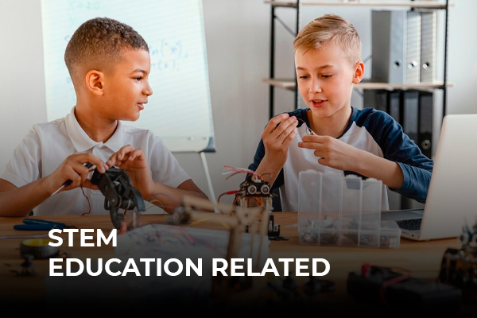

Technical Product Owner · Product & Systems Builder
I turn ambiguous product problems into requirements, architecture decisions, implementation paths and reviewable systems across fintech and EdTech.
My work sits between product strategy, technical systems and execution. I lead requirements, product direction, architecture governance, acceptance criteria and technical-product decisions, while working hands-on with AI-assisted development, frontend prototypes, APIs and cloud tooling.
My background includes STEM/EdTech, technical support and product management. That combination is useful in projects where the technology matters, but so do usability, process, documentation, stakeholder alignment and delivery discipline.
I use AI development tools aggressively, but keep product intent, material architecture decisions and acceptance criteria human-owned and versioned.
Selected work
A trading-intelligence product for self-directed traders, built around market context, strategy evaluation, current-condition rechecks, explicit execution control and decision history.
My role: Founder / Product Lead / Technical Product Owner — product direction, requirements, architecture governance, release scope, product-risk decisions and AI-assisted engineering workflows.
The public case study is sanitized to demonstrate architecture and technical-product work without exposing proprietary trading logic.

Public work around STEM learning design, coding/robotics education and curriculum development.
View repositoryEarlier software project focused on application workflows and user onboarding.
View repositoryEarlier workflow-automation project for employee payments and payroll processes.
View repository